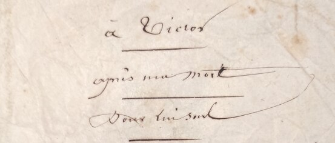
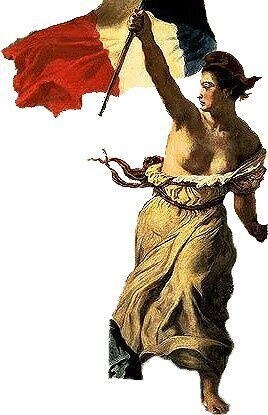
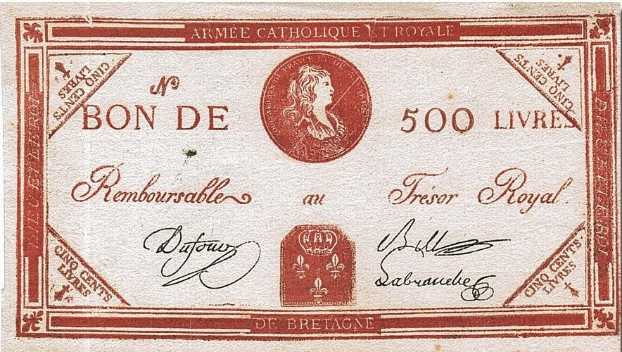
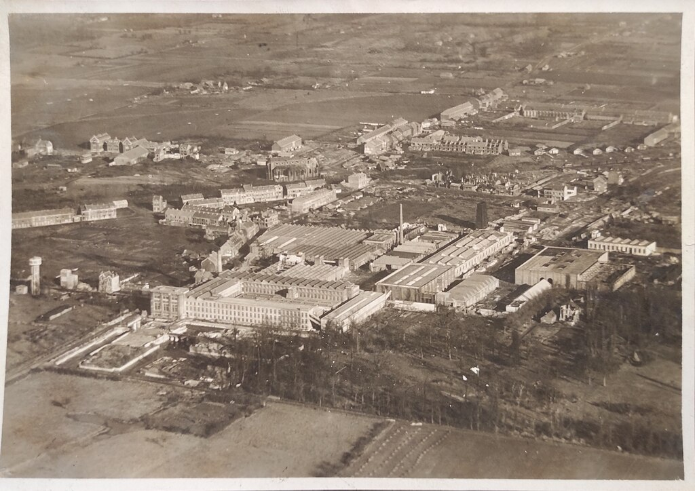
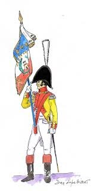
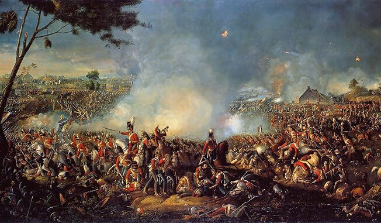
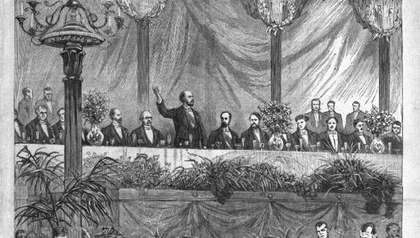
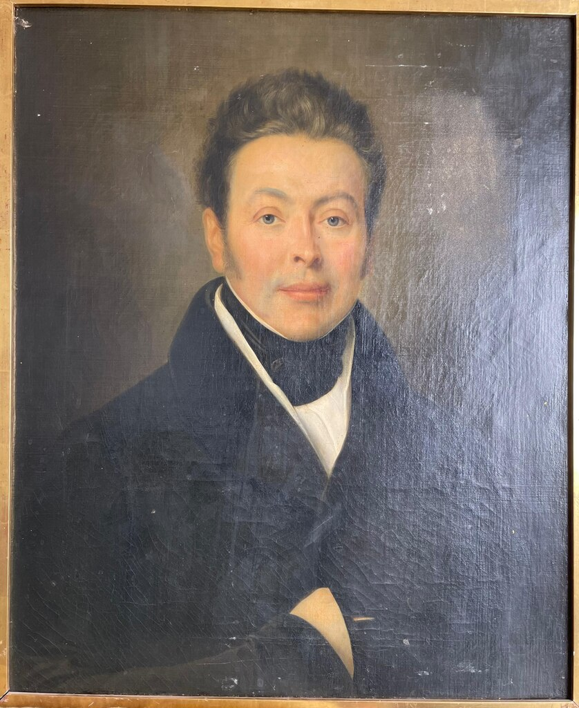

Biographie de Philippe SAINT-LEGER (1787 - 1871)
Biographie de Philippe SAINT-LEGER (1787 - 1871)
Rédigé par Arnaud Saint-Léger en 2025 sur la base des sources indiquées en bas de page.
Philippe rédigea en 1855 une longue lettre à son fils Victor, remise après sa mort.
L’original de cette lettre, accompagné de deux retranscriptions, nous est parvenu. Vous pourrez les lire à l’issue de cette introduction, qui vous donnera les contextes historiques de son récit.

Naissance, faillite de la famille et choix d’un métier

Nous sommes en 1787, deux ans avant la Révolution française, marquée par la prise de la Bastille. Les tensions sont extrêmes : on réclame la fin des privilèges, l’abolition de la monarchie, l’égalité entre citoyens. Les valeurs et institutions issues de cette Révolution marquent encore aujourd’hui la vie politique française. En 1799, le coup d’État du 18 Brumaire mettra fin au Directoire.
Philippe naît en février 1787 dans une famille modeste. Son père est originaire de Caucourt (près d’Arras), sa mère d’Annappes (aujourd’hui Villeneuve-d’Ascq). Le foyer vit de la vente de charbon de terre et de quelques travaux agricoles.

Son père, « aimait la Révolution et voyait avec joie s’écrouler les vieux abus de l’Ancien Régime ». L’affaire familiale prospère modestement, mais les paiements se font en assignats, cette monnaie émise pendant la Révolution. Or, de 1792 à 1795, les assignats se dévaluent tellement qu’ils entraînent la ruine de nombreuses petites entreprises, dont celle de son père.Par manque de moyens, Philippe ne reçoit qu’une éducation élémentaire et quitte l’école vers 14 ou 16 ans. Sa mère souhaite qu’il devienne tonnelier, mais son père s’y oppose, et il entre à la sous-préfecture.
Sous-préfecture puis commission de guerre … l’avancement
La sous-préfecture est alors un service d’administration locale : registres, correspondances, affaires judiciaires et militaires. Pour un jeune sans ressources, c’est un emploi modeste mais formateur : lecture, écriture, contact avec l’administration. Philippe y entre comme expéditionnaire.
Puis « Des bureaux de la sous-préfecture, je passai dans celui d'une commission de guerre, c'était de l'avancement… La guerre venait d'éclater de nouveau (contre la Prusse), la campagne de 1806-1807 allait commencer… L’empereur marchait vite : bataille d’Iéna, puis Varsovie. »
« En quartier d’hiver dans cette capitale, je me trouvai, comme on l’est à vingt ans, heureux de cette vie active et variée. Je voyais une carrière nouvelle s’ouvrir sous de favorables auspices : bientôt je pouvais devenir adjoint aux commissaires de guerre, à l’âge de vingt-cinq ans. Dans ce temps, la vie était courte et l’avancement rapide. Les guerres moissonnaient les hommes, ceux qui restaient debout montaient vite. Je me voyais déjà un habit brodé sur les épaules. »
Mais son rêve fut de courte durée : le tirage au sort l’exempta du service militaire. Ses parents, ravis, le firent revenir à Lille. Ce retour fut providentiel.
Rencontre de M. Roelans et intégration dans la filature
Pendant ses précédentes années à Lille, Philippe fréquenta les cercles de « comédie de société », où il développa son élocution, son goût et son esprit. Il y rencontra M. Roelans, jeune héritier industriel.
« Son père vint à mourir, le laissant seul maître d'une assez jolie fortune et d’un établissement industriel qu’il se sentait peu de goût pour diriger. »
Roelans offre à Philippe une chance : l’associer, le former, puis lui céder la direction. L’usine est une filature de lin. Une occasion inespérée.
Le lin, fibre végétale longue et solide, est alors une ressource majeure du Nord. La qualité du tri et du classement du lin brut (la filasse) conditionne la réputation de la filature.
Philippe apprend vite : il « se rend maître de sa nouvelle profession » et « remit sur pieds les affaires un peu trop négligées de la maison Roelans ».
Cette filature, située au 32 rue des Tours à Lille, avait été construite vers 1800. Elle sera gérée par la famille Saint-Léger pendant quatre générations, avant d’être vendue par André et son frère. Elle sera remplacée par la filature de La Madeleine, future usine Agache.

Campagne de Russie et refus d’entrée dans la Garde d’honneur

En juin 1812, Napoléon lance la plus grande armée jamais rassemblée en Europe : environ 600 000 hommes (la « Grande Armée »), venus de toute l’Europe occupée, partent envahir la Russie. Mais la campagne tourne au désastre : les Russes appliquent la tactique de la terre brûlée. Moscou est incendiée, les vivres manquent. Moins de 100 000 survivants reviennent. C’est un choc militaire, humain et économique colossal.
L’économie française s’effondre : pénuries, chômage, marchés ruinés. En 1813, Napoléon crée la Garde d’honneur, un corps prestigieux de 10 000 jeunes issus de familles nobles ou aisées.
Philippe, bien qu’il ait déjà accompli son devoir militaire, est désigné arbitrairement :
« L'honnête maire de Lille, noble de la veille, me désigna comme apte à cette honorable distinction et, ajoutant la particule "De" à mon nom, joignit effrontément la dérision à l'imposture. »
« Je résistai avec énergie, j’intimidai par mes menaces dans son cabinet… Mon exaspération commençait à impressionner mes compagnons victimes. Voyant ma ferme résolution, ils m’ajournèrent. »
Mariage et reprise de la direction de la filature
« Le mariage était à peu près le seul refuge ; je songeai donc à me marier promptement. La guerre presque continuelle qui durait depuis vingt et un ans avait rendu les hommes valides très rares. Les jeunes filles devenaient vieilles filles en maudissant l’empereur. Les mères se désespéraient ; se marier avantageusement était donc facile aux jeunes gens que le sort avait épargnés. »
Philippe épouse Adélaïde Sapin le 28 juillet 1813 à Jemappes (Belgique). Ils auront un garçon et trois filles (dont une morte en bas âge) :
Pauline Thérèse Ursule Saint-Léger 1814-1815
Pauline Thérèse Victoire Saint-Léger †1896
Victor Philippe Edouard Saint-Léger 1818-1872
Octavie Claudine Saint-Léger 1821-1888
Peu après, M. Roelans lui confie la direction de la filature, dont il perçoit 50 % des bénéfices.
Défaite de Waterloo et reprise de la filature
Après la campagne de Russie, Napoléon abdique et part en exil sur l’île d’Elbe. Mais il revient en 1815 et reprend brièvement le pouvoir, jusqu’à la défaite de Waterloo, qui scelle la fin de son règne.

La France sort exsangue de vingt ans de guerre. Le traité de Paris (1815) impose de lourdes indemnités et la restitution des territoires conquis. Le Nord est particulièrement touché.
Pourtant : « La filature fut assez heureuse pour traverser sans trop de sinistre cette période de calamités. »
En août 1816, M. Roelans se retire. Philippe se retrouve seul à la tête de l’usine, avec des moyens modestes mais une réputation solide : « Confiant dans mon travail et mon activité, j’envisageai l’avenir avec sécurité, bien que nos charges fussent grandes. »
Sa femme, Adélaïde, « élevée dans l’ordre et l’économie », mène une vie simple et rigoureuse : « Nous vécûmes très modestement… et nous étions heureux. Mon seul désir fut l’indépendance. Il ne faut pas beaucoup d’argent à cela. »
Engagement politique – Les banquets de la Réforme
Philippe ne mentionne pas directement son engagement politique, mais tout en laisse deviner la trace : son père démocrate, son refus des privilèges, son exaspération à l’idée d’être affublé d’une particule.
Son arrière-petit-fils André écrit : « Il s’est beaucoup occupé de politique, comme son fils. On le disait très instruit ; il a même, je crois, écrit quelques livres sur ses idées de liberté, car il était très républicain et contre la monarchie. »
« Il avait des réunions avec les grands hommes de l’époque qui désiraient le renversement de la monarchie. Il connaissait Chateaubriand, M. Thiers, le général Cavaignac. Il créa avec eux le fameux banquet de la Réforme, dont il était le président, et qui amena la révolution de 1830. »
Les banquets de la Réforme (années 1820-1830) étaient des réunions publiques déguisées en repas, permettant de contourner l’interdiction des réunions politiques. Ils jouèrent un rôle important dans la mobilisation qui mena aux Trois Glorieuses de 1830.

Connaître Thiers ou Cavaignac situe Philippe au cœur des cercles libéraux-républicains : ce n’est plus seulement un industriel local, mais aussi un homme de parole et d’idées, engagé dans les débats de son temps.

Conclusion
Parti de rien, Philippe devint un industriel reconnu et un acteur engagé de la vie politique. Son fils Victor poursuivra son œuvre.
Vous pouvez maintenant lire les lettres originales :